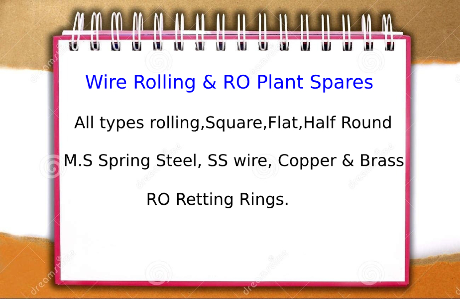

A premier manufacturing company founded by experienced mechanical engineers, dedicated to producing world-class reverse osmosis membrane pressure vessel closures, retaining rings, and custom spares.
GS Tech was founded in 2013 at Coimbatore, Tamil Nadu—the engineering hub of South India. We began with a dedicated team of experienced and qualified engineers with an exceptional track record in designing and manufacturing precision parts for fluid dynamics.
Over the past decade, we have established specialized manufacturing for all types of RO membrane housing end caps (4" & 8"), marine-grade SS 304/316 retaining rings, thrust cones, and adaptors.
By maintaining strict hydro-testing protocols on every single batch, we ensure that plant operators, OEM system integrators, and water treatment facilities avoid costly plant downtimes and membrane failures.

100% In-House Hydrostatic Testing
Built upon the foundations of reliability, precision engineering, and responsive customer partnership.
To manufacture defect-free, hydro-tested RO membrane spares that empower industrial and municipal water plants with leak-proof longevity, safe high-pressure operation, and maximum cost efficiency.
To be India's most trusted indigenous engineering partner for reverse osmosis pressure vessel hardware, advancing sustainability through superior fluid containment technologies.
Each component undergoes rigorous dimension checking, raw material spectrometer certification, and hydrostatic pressure testing up to 1200 PSI prior to customer shipment.
Our reverse osmosis pressure vessel components operate reliably across critical national and international sectors.
High salinity seawater RO facilities requiring corrosion-proof SS 316 retaining rings and high-strength 1200 PSI aluminium/FRP end caps.
Zero Liquid Discharge (ZLD) systems and effluent treatment units handling chemically aggressive recovery water.
Ultra-pure water generation units demanding sanitary sealing, non-leaching ABS end caps, and high-purity fluid conduits.
Breweries, juice manufacturers, and bottled water enterprises requiring non-stop uptime and rapid spare part availability.
Leadership guided by deep technical expertise, ethical manufacturing, and customer commitment.
Spearheading technical design, tooling innovation, and quality control systems. Under his direction, GS Technology has scaled from a regional supplier to a nationwide provider of certified RO pressure vessel spares.
Co-founded the organization with the foundational objective of making high-precision industrial reverse osmosis components readily accessible, durable, and economically priced for Indian industries.
Looking for trusted OEM spares, bulk contractor supplies, or customized membrane end caps? Get in touch with our Coimbatore engineering desk.